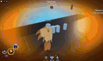
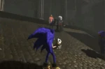

PCX (formerly known as Sonic.EXE or Pillar X), initially teased May 11th, 2024 and officially added December 22nd, 2024, is the sixteenth monster added to Pillar Chase 2. He is TheBladeNinja's own take on "Sonic.EXE", a demonic version of Sonic the Hedgehog with godlike powers who enjoys tormenting the souls of Sonic's friends as well as toying with whoever plays his game in general. Sonic.EXE is the main antagonist of the creepypasta by the same name which started a trend of many subsequent Sonic creepypastas, EXEs and other general horror works. PCX costs 1666 coins in the shop, being the most expensive monster in the game (as of the Stricken update). He was released during the Christmas 2024 event, making him the last monster to be released during the year of 2024.
|  When pressing 1 PCX wwill become mostly invisible, showing a faint, dark cloud with eyes and highlighting all survivors for 4 seconds. Some ambience will also play when PCX is near a player. During the ability, PCX will have an increased movement speed of 44 and will be able to fly up by using Q key. PCX can end the ability early by pressing 1 again. Otherwise, after 6 seconds this move will automatically end. When he exits the ability, PCX will reappear and swipe forward. If PCX catches a player, he will do 25 DMG, stunning the player and causing PCX to point and laugh as the player gets up from the floor, giving them time to run away. |
 When pressing 2 PCX will break his inhibitor rings off his wrists and ankles as he begins to fly forward in the direction your camera is facing, speeding up as the ability goes on. During this, PCX can turn slowly while it's active, but if PCX runs into a wall, this ability will abruptly end. If PCX catches a player, PCX will knock them over for 25 DMG and shout "I AM GOD!" before lunging at them, inflicting an additional 25 DMG for a total of 50 DMG overall. After swiping, PCX will laugh at the victim, giving them time to run away. Has a 18 second Cooldown. |